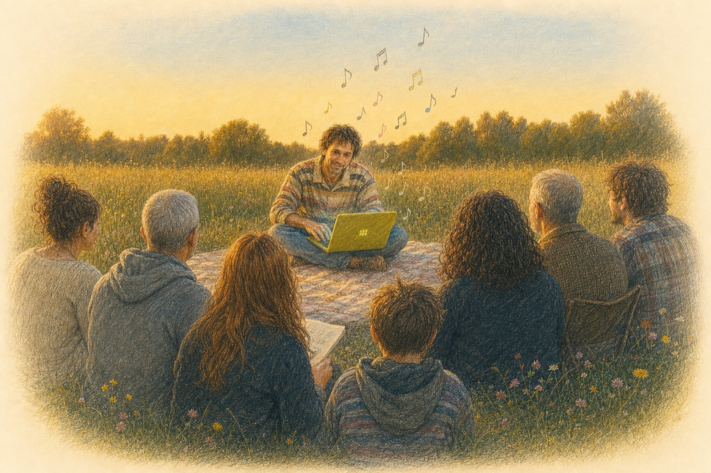

The Works — eleven contributions, edition of 64
One canonical plate per contribution, photographed July 16 from publication copy 51. The order follows the colophon card.
The Photographs — July 16 documentation shoot
The full documentation shoot of the collated edition — every page, object, and detail of publication copy 51. Burst frames are folded behind their lead image (+N reveals them); click any image to view with captions and step through every frame.
The Photographs — June 13 closing at Fuser
The 78 photographs of the closing event at Fuser, 1811 Blake Ave — cohort performances and the edition's collation day, folded the same way. Index view; the masters live in the program's own shared archive, cataloged below with SHA-256 identities.
The Doc — live on sosoft.arts.ucla.edu
The plain-spoken companion to the paper, published on the Social Software site, revised through Casey's anchored copy-edits.
The Paper — the edition score
“Keymaps as Social Software” — the research paper printed as sixty-four copies for the collated Cycle 2 publication, with a mobile cards format and five translations.
Interactive Keymap
The p5.js notepat keymap embedded at the foot of the doc — press the keys.
Header Illustration Study
Colored-pencil illustrations for the doc header. The chosen image: a circle of listeners gathered outdoors around a laptop of keymap tiles, notes in the air.

Click for full resolution. Below, the full study — house-show variants (v2), studio variants (v1), and the earlier header explorations.
Cycle 2 Proposal & KidLisp Score Cards — March 2026
The opening proposal — Aesthetic Computer submitted as a social software project in active development — and the KidLisp score cards with QR codes that accompanied it.
The Reel — unboxing the edition
A narrated vertical reel built from the July 16 unboxing/page-through of the collated publication and the June 13 Fuser documentation. Two cuts: the video page-through and a stills-driven edit.
Media Archive
Working catalog of the cycle's documentation: 78 photographs from the June 13 closing at Fuser, the 174-photo July 16 documentation shoot, and the presentation recordings. Masters stay offline; the catalog records provenance, descriptions, and SHA-256 identities.
×
‹
›


{kind=link}
{kind=link}
{kind=link}
{kind=link}
{kind=link}